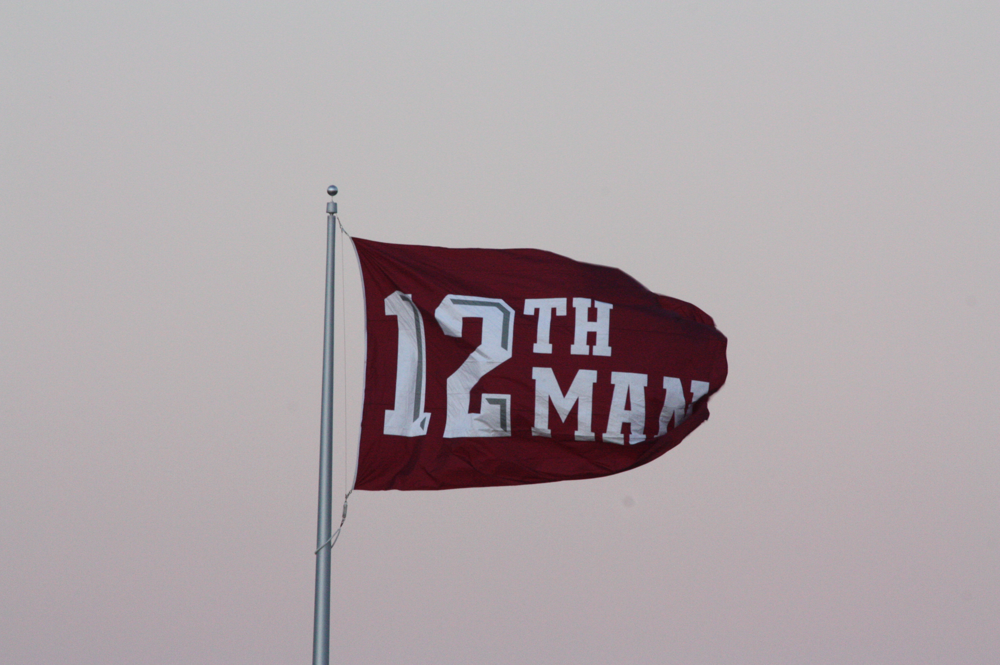

I am the ... 
Back in high school, I remember struggling to determine how I could pay to move away from home to be able to attend a university that was not in my home town. I had a back-up plan with an admittance to study at the University of Houston, but my heart (from about my sophomore year in high school on) was in Aggieland. I was finally able to secure funding through a student loan, and more importantly, a place to live with a group of high school buddies, and in August 1985, I started my degree program in the College of Architecture.
I arrived at architecture after an evaluation of architecture, aeronautical engineering, and computer science. I think the requirements in math and chemistry turned me away from aero, and CS had many of the same initial requirements, which is how I ended up in architecture. But it was not to be. I was not enthused with the degree plan, so within about 6 weeks into the first semester, I was already looking around for a different major. I settled on business with an eye toward, gasp, accounting! Where did that come from?
Accounting was a disaster. I hated it. Could not stand it. And my work showed my frustration in terms of exam grades. Not a good fit for a student in the College of Business. But when I took an introductory business computing class, I was reminded of my interest in computer science. I changed to MIS, which, while not exactly CS, is close enough.
My degree led to a good foundation in CS principles that existed in the late 1980s. Much of what I have done professionally is self-taught, as stuff like C#, Visual Basic, and T-SQL did not exist at the time I was studying at Texas A&M. I have turned that foundation into a good career as a developer in industries as varied as insurance, chemicals, oil and gas, clinical trials, traffic engineering, and pharmacy. I am now looking to expand upon my software experience by adding technologies that my career has thus far not put me in a position to gain experience.